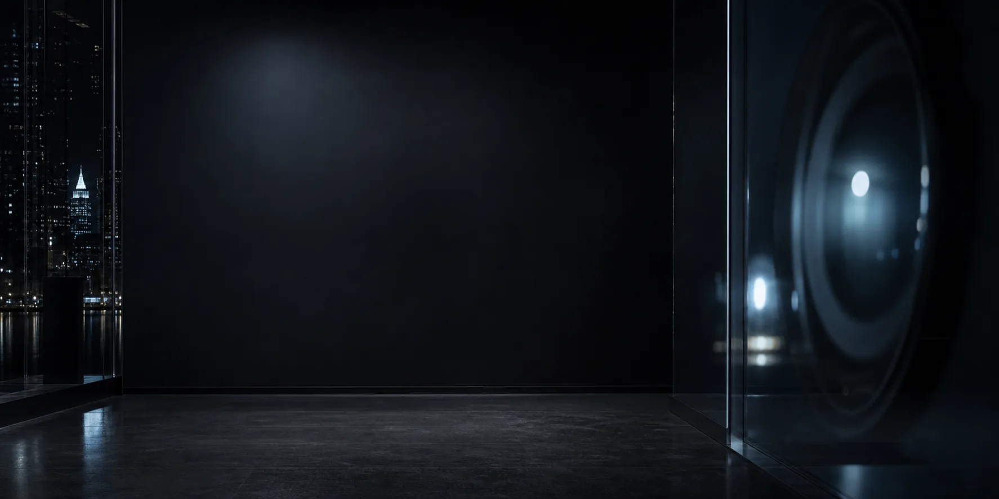
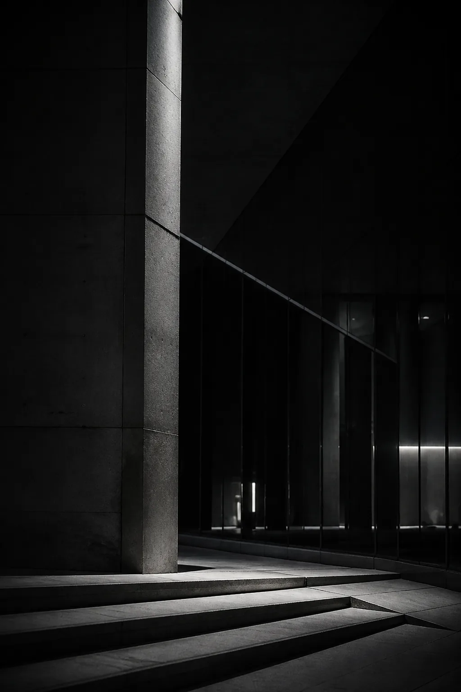
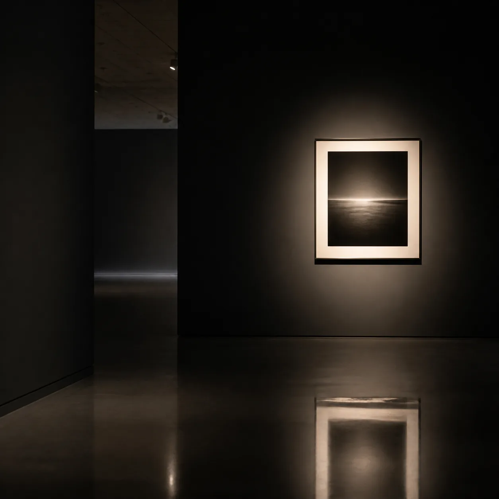

Series 01
Rain Trace
Urban night / 2026

Selected Works
这里先放置基础占位作品。后续可以按系列、年份、城市或展览项目继续扩展。
Urban night / 2026

Architecture / 2026

Gallery / 2026
Upcoming
用于展示接下来会参加的展览，以及展览当天的时间表。
确认作品顺序、灯光、标题牌和现场动线。
面向访客开放，可在现场进行自由观看。
围绕拍摄动机、选片逻辑和输出材料进行简短分享。
与观众、策展方和摄影同行进行开放交流。